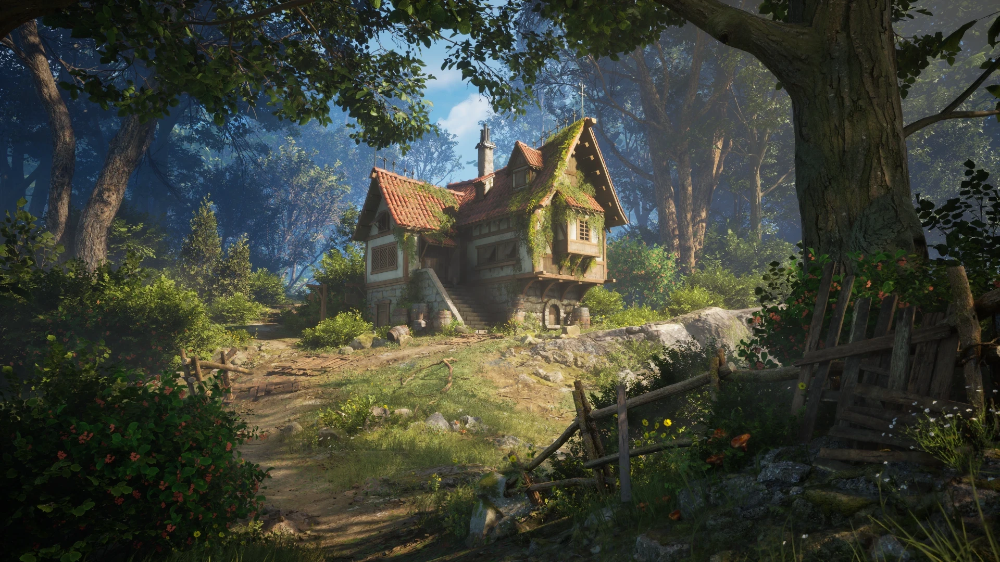

Read the story below and click on the decision you want to make.
You take the LEFT path and continue you jouney through the forest. You start to believe the trees will never end untill you come across a cottage in the middle of a clearing. You start to approach the house when you hear a young woman's voice near by. You turn to see a woman in red waving you over, asking if you're lost.
What will you do?

Go over to the woman and ask for help..
